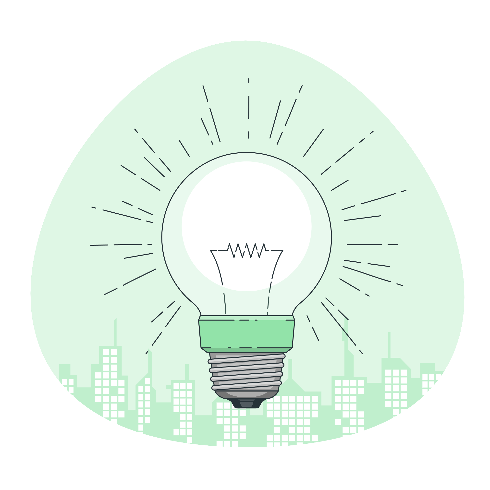

<section class="min-h-screen background">
  <div class="grid grid-cols-1 sm:grid-cols-2 grid-rows-1 gap-0">
    <div class="p-6 ">
      <blockquote>
        <p class="text-3xl text-gray-900 dark:text-white" style="margin-top: 19rem;">
          Comparte tu visión para el futuro de tu comunidad. ¿Cuál es tu sueño para hacerla aún mejor? Describe tus
          aspiraciones, desafíos actuales y cómo te gustaría ver a tu comunidad crecer y prosperar. Tu perspectiva es
          valiosa para el desarrollo de un Comunilab más fuerte. ¡Cuéntanos tu sueño!
        </p>
      </blockquote>
      <div class="text-center" style="margin-top: 5rem;">
        <button type="button" [routerLink]="['/user-choice']"
          class="focus:outline-none text-white bg-green-700 hover:bg-green-800 focus:ring-4 focus:ring-green-300 font-medium rounded-lg text-sm px-5 py-2.5 mr-2 mb-2">
          Atras</button>
        <button type="button" [routerLink]="['/need/dream']"
          class="ml-auto focus:outline-none text-white bg-green-700 hover:bg-green-800 focus:ring-4 focus:ring-green-300 font-medium rounded-lg text-sm px-5 py-2.5 mr-2 mb-2">
          Siguiente</button>
      </div>
    </div>
    <div class="p-6">
      
      
    </div>
  </div>

</section>
